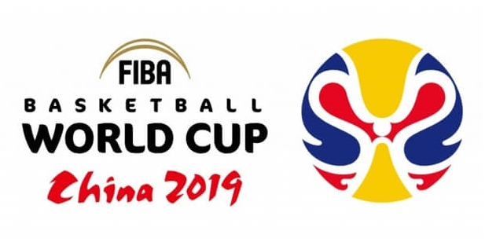
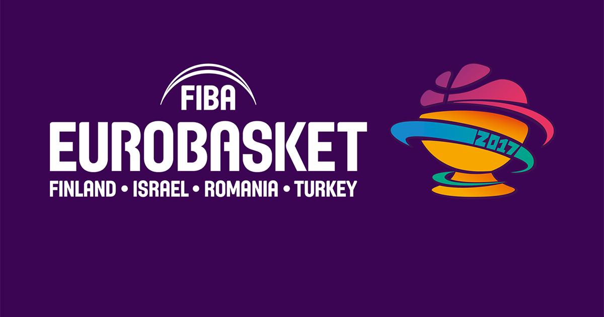

Košarka je sport u kojem se dva tima od po 5 igrača bore postići što više poena (koševa) ubacivanjem lopte kroz obruč protivničkog tima, uz skup određenih pravila. Izumio ju je Kanađanin James Naismith 1891. godine, ustanovivši 13 osnovnih pravila. Iako je košarka primarno američki sport, ubrzo je postala i međunarodni i danas gotovo da nema zemlje u kojoj se ne igra. Olimpijski status stekla je 1936. To je sport i za muškarce i za žene. Igra se u 2 glavne verzije: američkoj NBA i međunarodnoj FIBA. Između NBA i FIBA-e postoji niz razlika: dužina trajanja utakmice, broj ličnih grešaka, dimenzije terena, ograničenja itd. Po pravilima koje propisuje FIBA.
Početkom decembra 1891. dr. James Naismith, kanadski liječnik, na tadašnjem Univerzitetu McGill (danas Univerzitet Springfield), osmislio je sasvim novu dvoransku igru s namjerom zadržavanja kondicije svojih učenika tokom dugih zima.[2] Nakon odbijanja ideja objašnjenjem da su pregrube ili nepotpune, prilagodio je nekoliko sportova u jednu cjelinu i napisao jednostavna pravila. Stavio je koš na visinu od 3.05 metara (10 stopa). Taj koš se razlikovao od današnjeg po tome što je imao čvrsto dno, dok današnji koševi imaju mrežicu koja propušta loptu. Dok su koševi imali čvrsto dno, svaki put nakon postignutoga poena lopte su se morale izbijati iz koša.[3] Naismithova nova igra bila je vrlo slična rukometu, koji je nastao otprilike u isto vrijeme kao i košarka, krajem 19. stoljeća.
Ženska košarka počela je 1892. kad je Senda Berenson, profesorica tjelesnog odgoja, prilagodila Naismithova pravila ženama. Prva službena košarkaška utakmica održana je 20. januara 1892. u dvorani gimnazije YMCA. Igralo se s 9 igrača na terenu duplo kraćem od današnjeg NBA-terena. Originalni naziv košarke na engleskom je basketball, a složenica je od riječi basket = koš(ara) i ball (= lopta). Ime je Naismithu predložio jedan od njegovih učenika. Igra je postala popularna od samog početka.
Prvi igrači košarke bili su studenti YMCA. Kasnije se igra proširila na čitave SAD i Kanadu. Do 1896. postojale su i brojne ženske košarkaške ekipe, no poprilično gruba pravila i brojna publika odvratila su košarku od primarnog cilja YMCA: da to bude igra koja pomaže studentima da ostanu u formi. No, uprkos tome, prije Prvog svjetskog rata uspostavili su se brojni amaterski savezi s amaterskim klubovima, i to u SAD-u.
Košarka se prvo igrala nogometnom loptom. Prve lopte izrađene isključivo za košarku bile su smeđe, što je bila uobičajena boja sve do 50-ih godina 20. stoljeća, kada je Paul "Tony" Hinkle, u potrazi za loptom koja bi bila uočljivija, u optjecaj uveo narančastu loptu, koja je i danas standardna.
Svetsko prvenstvo 2019.

Svetsko prvenstvo u košarci 2019. će biti 18. turnir Svetskog prvenstva u košarci za muške seniorske ekipe u košarci. Turnir će se održati u Kini , i to će označiti novu eru za takmičenja, kao što je opisano. Odložen iz 2018. za 2019. godinu, na godinu dana, ovo takmičenje će biti prvo Fibino svetsko prvenstvo, još od 1967 , koje neće biti održanu u iste godine kao i Svetsko prvenstvo u fudbalu. Pored toga, grupna faza će se proširiti sa 24 do 32 timova. Najboljih 8 timova, uključujući i Japan, kao domaćina Letnjih olimpijskih igara 2020. (gde idu 2 ekipe iz Amerike i Evrope, i najbolje ekipe iz Afrike, Azije i Okeanije) u ovom takmičenju će obezbediti mesto u muškoj konkurenciji na Olimpiskim igrama 2020. u Tokiju.
Eurobasket 2017.

Europsko prvenstvo 2017. u košarci 2017. ili FIBA Eurobasket 2017. je 40. izdanje ovog natjecanja koje organizira FIBA Europa. Zemlje domaćini su Finska, Izrael, Rumunjska i Turska. Ovo je drugi put da četiri države organiziraju jedno Europsko prvenstvo u košarci. Do 2017. godine Europska prvenstva su organizirana svake dvije godine no ubuduće biće organizirana svake četiri godine, tako da će sljedeće Europsko prvenstvo biti održano 2021.